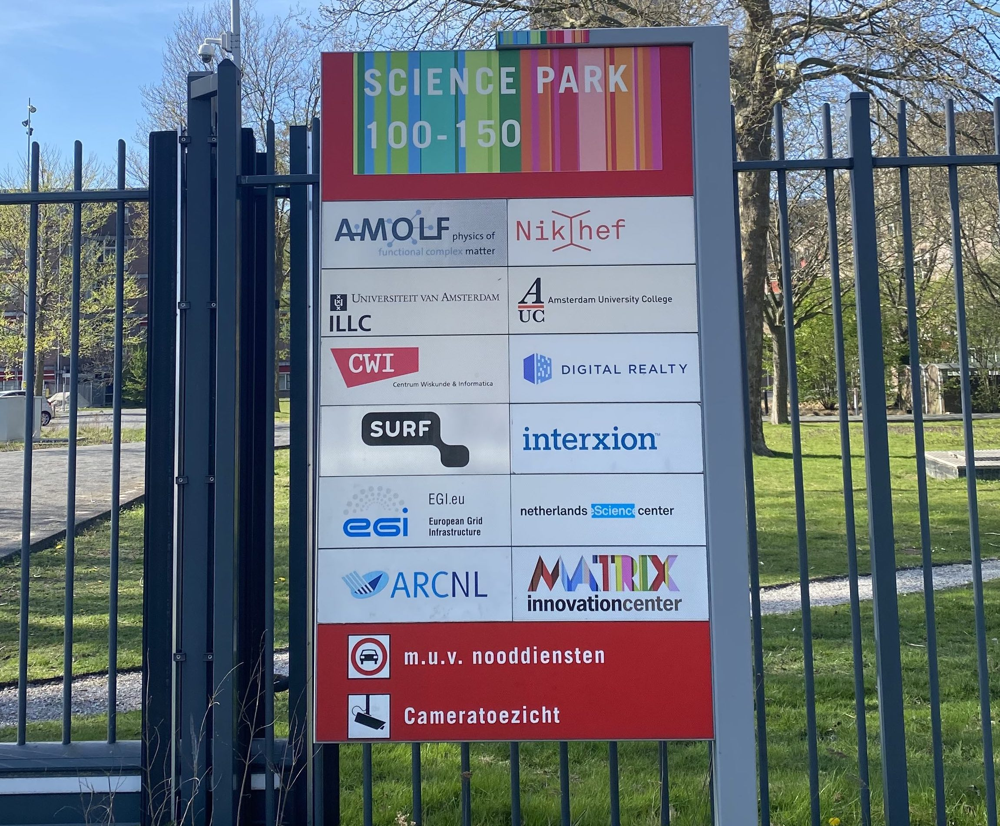
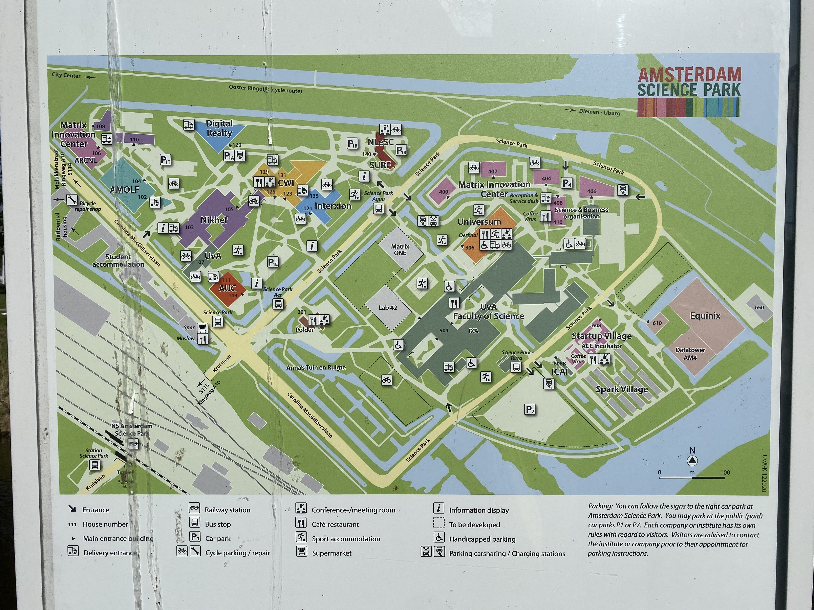
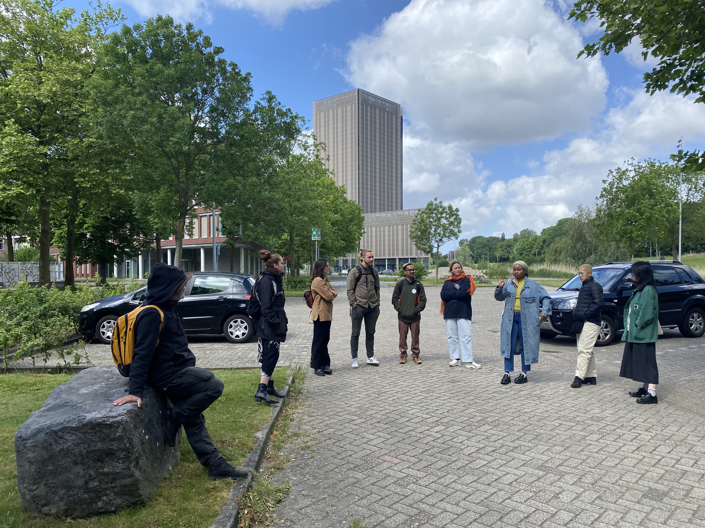
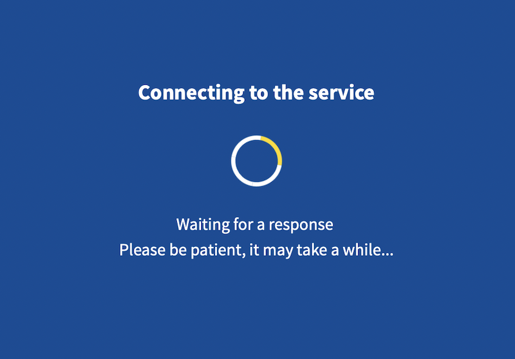
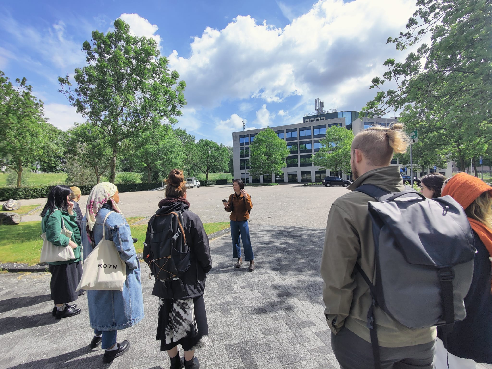

A data center walk in Science Park Amsterdam
Project website: https://yancong.github.io/datacenter/
The script below was prepared by Yan Cong with additional documentation and materials added to reflect the walking tour taking place on 27 May, 2022. Amina, Charlotte, Jas, Krish, Maria, Martin, Maxigas, Natalie and Ziwei participated in and contributed to the walk.
Text last updated on 6 June 2022.
Layout with paged.js last updated on 7 March 2023.

Photo by Yan
Thank you for joining this tour! This project started with a simple question about how to make the invisible visible. We usually talk about and use the cloud in a very abstract sense. Now we’re standing in one of the areas in Amsterdam that has a cluster of data centers. In fact, from here we can see one of the data center buildings. We don’t usually see them, or think about them in a material sense for two reasons:
When I was researching this topic one thing stood out to me: these companies put a lot of information about their data centers online in order to attract clients. Through those we can study how they want to be perceived. But there are also things they don’t want us to see, and that’s why we’re here today. Our strategies are:
I’ll talk about what I’ve researched, but I want you to contribute your knowledge and questions to open up discussion to our group.
Before entering Science Park, we looked at the logos of companies/organizations. Martin recognized Interxion as a data center company, which is correct. Maxigas pointed out Surf. Although no one registered what it is immediately, when shown the UvA ID login interface, everyone realized it is the digital service that we use almost daily when logging into services with our UvA ID.
Photo by Yan
Thanks to Maxigas’ help, we were able to enter Science Park! We took a brief look at the map (see below) before heading to the next stop. For future tours: If the gate is closed, talk to the security through the intercom and ask for access. You could say, “We’re ____, and we’re studying digital infrastructure. Is it okay if we come in and take a walk to see the data centers’ buildings?”
Photo by Yan
As we arrived at Nikhef, we saw an unfinished construction at Nikhef, which may be related to thecapacity upgrade announced on the institution’s website.

Photo by Yan (taken on 3 May, 2022)
We started with a simple question raised by Charlotte: what is a data center?
Power, connectivity and processing equipment (cables, servers, storage), facilities for security and fire are some of the most important things in a data center. If we look up some data center’s websites, their selling points are usually about power redundancy, the different standards they can accommodate, and extra layers of safety. However, Google map reviews show a different perspective:
Google user MADMAXX44 wrote a review on Google’s Eemshaven data center, “If you have to go there as a delivery person, good luck. If you are not registered you will not enter the site. And if you are registered, it will take you half an hour to an hour to get behind the fence.”
Google user Sven F couldn’t stop raving about the free delicious (Starbucks) coffee provided at Equinix AM3, “Delicious free coffee. Good WiFi signal between the racks, but downstream could be faster at this site. Security is accurate on access times. If your access window starts at 6:45, you won't get in at 6:44. They let you have as much delicious coffee as you like, though.”
During the walk, Maxigas introduced the technical details about servers, such as “rack unit” (what are 1U and 2U). Martin pointed out that servers required a cool and dry environment to operate, foreshadowing topics we’d cover later during the walk.
All the data centers in Amsterdam are multi-tenant data centers. We can compare multi-tenant data centers to WeWork, but for data. It doesn’t make sense for most of the digital companies to set up the infrastructure system of a data center by themselves, so they rent space from data center companies, benefiting from the power, connectivity and security systems. On the other hand, big companies like Google, Microsoft, Meta and Amazon have their own data centers, which are what we usually call “hyperscale” data centers. There are currently three hyperscale data centers in the Netherlands. Google has two in Middenmeer and Eemshaven. Microsoft has one in Middenmeer.
One of the main reasons why Amsterdam is a preferable place for data centers in the Netherlands, or even in Europe, is because of the Amsterdam Internet Exchange. To put it in simple words, the internet exchange is a platform where internet service providers can efficiently exchange IP traffic on an international and national level, which helps service providers provide low-latency connections to their customers. If you’re an e-sport fan or a high frequency trader, you understand the importance of having low-latency internet connection.
Amsterdam Internet Exchange has quite a few co-locations in Science Park, which allows service providers to directly connect to the internet exchange point.
Maxigas raised the question about the location of Amsterdam Internet Exchange’s data center. I looked up the information on Amsterdam Internet Exchange’s website after the walk, and it turned out that they don’t have a centralized data center. “AMS-IX is a distributed exchange, currently present at multiple independent colocation facilities in Amsterdam. Each site is equipped with one or more access devices to enable connections to the AMS-IX infrastructure.”
Another important infrastructure that connects incoming and outgoing data traffic internationally is the submarine cables. Martin mentioned the Cable Map, which is useful to understand how countries are connected with each other around the world. I also recommended a recent Rest of World article on Google and Meta’s efforts to build submarine cables in Africa.
Metahaven wrote, “The internet can be compared to a patchwork of city-states, or an archipelago of islands. User data and content materials are dispersed over different servers, domains, and jurisdictions (i.e. different sovereign countries). The cloud is more like Bismarck’s unification of Germany, sweeping up formerly distinct elements, bringing them under a central government.”

Photo by Natalie (taken from her apartment next to Science Park after the walk)
Data centers are essentially housing for servers and storage. Judging from the facade of the building, could you tell which floors are office spaces and which are built for machines? While offices tend to have big windows to maximize natural light, data centers need a cool and dry environment for servers to function properly. What other features of the building catch your attention? What do they tell you about data centers?
There are plenty of Quora answers written by people who have worked in data centers before. What they shared gives us a peek into what it’s like working inside a data center. Some of the challenges include enduring the coldness and noise (wearing a jacket and noise-canceling headphones are key!), heavy lifting and long working hours.
For example, Quora user Brandon Berryhill wrote, “In the data center, my record is 48 straight hours working with only bathroom and a few quick Mt Dew breaks (no drinks in the DC).”
The word “realty” in the name Digital Realty reflects the nature of data centers accurately. In a city experiencing a housing crisis, the use of space of data centers is a point of contention. Based on Amsterdam City Council’s policy for data centers between 2020 and 2030 (english translation), all the newly built data centers in Amsterdam municipality have to “be built stacked in the framework of intensive use of space.”
It’s safe to say that new data centers in Amsterdam in the next 10 years will look more like this, rather than the usual single-floor, warehouse-like structures. A few days after our walk, the Washington Post published a story about how political decisions, on local and national level, were made around Meta’s data center in Zeewolde. Last year, Zeewolde municipality changed the land from agricultural use to industrial use, in favor of Meta. In the local election this March, Leefbaar Zeewolde won a majority by running on the platform in opposition to Meta's data center. However, it was not the local election that made Meta suspend the project. It was a motion in the parliament that temporarily put the project on hold. If the national ministry of interior affairs, the authority that manages land, decides to sell the land to Meta eventually, the data center project will be good to go. It’s important to think about the tension between local and national governments in making decisions on infrastructures of such scale: while it serves the entire country and beyond, the impact is felt locally.
After hearing about the long working hours, Amina raised the questions about data center workers’ working conditions and unionizing. Upon searching after the walk, I found that Google and its subcontractor lost a labor case last year for suspending data center workers for discussing salaries. Google acknowledged that their workers and contractors have the right to discuss salaries and to unionize. Although this was a win for labor rights at the Google data center, it reveals that data center workers were not Google employees—a well-known issue about who counts as a worker at big tech companies, and the unequal treatment of contractors and contingent workers who are excluded from employee benefits and perks.
Martin shared his previous working experience running a website for a company. He said that if there’s anything wrong with the website, he’d call up a person at the data center to fix the problem, which means that staff at the data center are expected to be on call 24/7.
Photo by Yan
We also got into the technical details of cloud services and data centers. Martin compared the design of a data center to putting together one’s own PC. Just like we choose the RAM and hard drive according to the processing power and storage we need, businesses choose the right server and storage capacity at the data center accordingly when they set up their equipment. Ziwei offered an example of graphic rendering which usually utilizes the computing power of the cloud. Maxigas pushed this discussion further by offering a detailed explanation of Amazon Web Services, which is a much more flexible and customizable option for businesses that need computing power or storage for a short period of time. (Without being able to fully repeat what Maxigas said, I found this video that explained it in simple language: AWS In 5 Minutes | What Is AWS? | AWS Tutorial For Beginners | AWS Training | Simplilearn)
As we walked away from Digital Realty, we looked at the machines and fans on the rooftop of the building. As the fans were running, we also tried to listen to its sound. Maxigas observed that the pattern design of the building’s facade has the resemblance of Islamic or Middle Eastern style, which is a reminder that mathematics is the legacy of Islamic civilization. The facade was also designed to be efficient for airflow.
*Not a data center, but an important infrastructure!
If you are a student at UvA, you must have encountered the blue screen above, after you've logged into services using your UvA ID. SurfConext is the technical layer that allows us to log into numerous services with one UvA ID, such as Canvas, Zoom, Outlook, even the website where we request for free Covid self-testing kits.
Martin asked if Surf is a private company, and if they have non-educational clients. I found the answer fromSurf’s about page, “SURF is a cooperative association of Dutch educational and research institutions in which the members combine their strengths… The members are the owners of SURF.”
According to the company’s newsbrief from 2017, SurfConext has three data centers, two in Science Park (Nikhef and Interxion) and one in Utrecht. The data centers in the two cities are independent, allowing SurfConext to provide stable services in case of interruptions.
Many internet infrastructures, like SurfConext or data centers, tend to disappear into the background, because they sort, verify and connect services at a level we don't see, and we typically don't directly interact with them. If you’re curious about the company’s services and updates, I encourage you to read SurfConext’s wiki.
Photo by Krish
Maxigas explained Surf is the last bastion for Dutch academic institutions to have their own digital infrastructure. Martin also shared an update about making Digital Method Initiative’s tools (4CAT, TCAT, etc.) compatible on Surf for other Dutch institutions to use easily.
Amina made a comment that she had to store all the interview data on Microsoft’s OneDrive for her thesis. It is because Microsoft provides cloud storage for UvA, therefore all students are recommended to use OneDrive over Google Drive or iCloud.
Speaking of taking control of our data, the group asked the question: how can one track and trace how our data travel through the internet? Martin reminded us of the worksheet that uses traceroute and whois to trace the course of our TCP/IP packets.
Yan also shared an anecdote about data that was mentioned in an earlier lecture: after Brexit, banks had to move their European headquarters from London to Amsterdam. The first thing they moved was their data: before they had a physical office in Amsterdam, they’d already had a data center here.
Equinix is a U.S. company that has invested more than $1 billion in Amsterdam to build nine data centers. From this Google Map review photo from 2012 we can guess that the two shorter buildings were built first, and the taller building in the back was added later, which reflects the ever expanding nature of data center business.
Activity: Stop here and take a minute to listen to your surroundings. Do you hear the humming of the server in the building? Do you hear the occasional sound made by ducks and birds swimming in the river around the building?
During our tour, we heard the sound of birds, water, wind, a plane, and a shaking flag pole. We could not hear the server at all. Even though the servers make loud noises, the data centers are completely sound-proof. (Given that there are rows of student housing less than 50 meters away, it’s good that we couldn’t hear the sound of the servers!)

Photo by Maxigas
Data centers like to position themselves around nature, partly because they need to be close to water, in order for the cooling systems to work. Although many cooling systems can use air for cooling, if the temperature and humidity is correct, water is still an essential resource for cooling, when the air is too hot or too dry. At Equinix, you’ll see a belt of water around the buildings, which also act like a fence to stop people from getting too close. Like a castle!
Amina asked a question about data centers’ water consumption in dry areas. In some of the water-scarce U.S. states, Google has been widely criticized for using too much water.
Martin pointed out that even though many data centers claim that they don’t consume much water because most of the water used for cooling will eventually be emitted (“returned to its origin”), the quality of the water will change. There’s evidence that water released from data centers is “dead” because there’s no mineral or bacteria. (see Big Data Ecologies.pdf p. 639)
Another essential resource for data centers is electricity. Since data centers produce a lot of heat, it is common practice to provide the residual energy to nearby facilities that need heating, such as greenhouses and housing. For example, Nikhef says their residual energy was used to heat the student apartments on the other side of Carolina MacGillavrylaan. Here, across the street from Equinix, you’ll see a big greenhouse run by UvA’s Faculty of Science. Next to Equinix, you’ll see several rows of student housing. It’s possible that Equinix sends the residual energy to both the greenhouse and the apartments.
One of the biggest concerns over Meta’s proposed data center in Zeewolde is energy consumption, which was planned at 1380 gigawatt hours per year. To give this number a bit of context, it is double the annual energy consumption of the entire Zeewolde. Under Amsterdam’s 2020-2030 data center regulations, the annual growth of energy consumption is limited to less than half of that of Meta’s data center (67 megawatt x 24h x 365 days = 587 gigawatt hours).
What are some of the analogue media that you still use (tapes, CDs, DVDs, vinyls, books, etc.)? Is there a specific reason why you still hold on to those analogue formats? (collection, nostalgia, like to hold a physical copy, etc.)
Think about which commercial cloud(s) handle your data. In what instances do you use open source/non-commercial/non-GAFAM services? Is there a particular reason? For example:
Is there any particular cloud-related service that you’re resisting/rejecting in particular? It could be a type of service (e.g. password manager), or a company (e.g. Google). Why?
Drawing from all the answers above, what could be alternatives to commercial cloud services?
Scan the QR code to access the links!